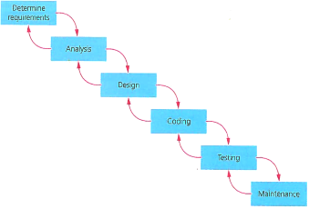
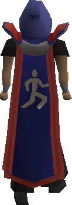

yeah its a way to prgramming. a model to follow when trying to make a large scale project. keeps things running smoothly since nothing works properly in the larrge scale if you just randomely code bits here and there. works for now though dw :)
No, this isn't a dreadful Geography lesson! Its a dreadful Computer Science one xDDd!
The waterfall method isnt about pouring water all over your computers. However, like a waterfall the method follows a logical downward flow when approaching the development of code. They dont give things random names after all! hehe 
The image to the right sums up the waterfall model quite nicely but lacks detail for each stage:
Determine reqs - figure out what the user actually wants from you using questionnaires, interviews or just
looking around at the business (observation). Also, check the software and system reqs.
Analysis - is it feasible? Remember TELOS - Technically feasible, does the tech exist yet?
Economically feasible, will you make money for this trash? Legally feasible, dont be a dummy.
Operationally feasible, can you make an efficient way to solve the problem at hand? Schedulable, can you
do the task in the time required?
Design - use a bunch of trash like pseudocode, flowcharts, structure diagrams etc to find a logical way to
complete the task effectively.
Coding - code the deisn in an appropriate langauge with all ye syntax. not much to say here dude
Testing - black box testing, give it to a pleb who doesnt know how the code works. like alpha, release it
to a small group. white box tester, give it to a fellow programmer to try and break the code. in house stuff
Maintainance - the client wants you to update the trash when stuff changes. also make it better for rep
Now that you know what it is lets analyse the pros and cons! woo!
| Pros | Cons |
|---|---|
| well ya got a ton of documents at each stage so its easy to trace back | making a lot of documents sucks |
| the model is linear and thus straightforward to execute, manage over and follow | testing is late, problems or changes to reqs means a lot must be scrapped to fix, basically start over sometimes. |
| nothing is produced, nothing to show the client, till the very end. | |
| Efficient code not prioritized. |
so yeah, you only want to use this for short projects. that way if you make a blunder you havent wasted a huge amount of time. Also, if you know exactly what the client wants at the start then nothing will change so its fine to use it.
This one has the coolest name. Unfortunately, that doesnt make it good :/ its good because of its skillz :D Lma0
this one is all about iteration, continously doing what you just did while adding on a bit more. ya keep looping through so there isnt a ton of mistakes.
how it works? well essentially you get a team of programmers in the same room. then ya pair em up, one would be a tester and another the coder. this allows running and optimization of the code to occur simutaneously. Then, every day the pairs report back to each other for a status update, this is a stand up meeting. tis quick.once they got a good block they check it meets the purpose. every week or so theyll have a block done so they they plan the next block iteration accordingly together in the stand up meetings to when needed. then they release when it meets the reqs.
same thing again ye? 
| Pros | Cons |
|---|---|
| High efficient code. well made with the thorough iterations and testing | gotta keep annoying the client asking em if its good enough yet |
| consisently changing what programmers do, raise morale | everyones gotta be in the same place, geographically. |
its radical man! not to bad to follow:
when your guy is a pleb and doesnt know what he wants use this. he'll get exactly that since you keep asking him unfortunately he might get annoyed you waste so much of his time. if the project doesnt allow you to make a quick prototypes then ya cant use this. only if you area able to keep adding to it and asking can this be used. get a lot of feedback though,
ya start from the middle and work ya way out, each time going over that sector of the spiral but in more depth since there is more to do for that sector since you have done more stuff at that point
first sector is the requiretments from the client. make sure its fit for purpose ye
then risk analysis, is it work going into and continuing? make some prototypes here too
then develop the project further as well as the prototype. actually do the work set out.
then ya plan through your requirements again and keep spiralling out (of control lelxd)
if you plan on making a high risk play but want to actuall calc the risks then go ahead. also, if your client doesnt know you can ask him frequently during the purpose stage so its aight for that too.. make sure you can change it incrementally - you want to develop the prototype not make a completly new one each time yano.